Subscription savings — the window, not the bill
On a flat-rate Pro/Max plan there is no per-token bill to cut, so distil's dollar figures are notional. The thing that is not notional is the rate-limit window: every token spent on a 40 KB test log is quota unavailable for the next task. This page is how distil saves that quota, what it measures, and where it honestly saves nothing.

Why the proxy can’t help here
distil’s usual method is a local proxy. On a subscription it deliberately runs in
--lossless-only mode and saves very little, because Anthropic’s consumer terms
(Section 3, item 7) prohibit accessing the service “through automated or non-human
means… except when you are accessing our Services via an Anthropic API Key.” That was
clarified and enforced in February 2026. distil takes the conservative reading: your account
is not worth a few percent.
So the question is not how do we compress harder through the proxy. It is what path saves tokens without a proxy touching your session at all.
The answer: a first-party hook
Claude Code ships a documented extension point. A PostToolUse hook can replace a
tool’s result before the model reads it, via
hookSpecificOutput.updatedToolOutput. Claude Code compresses its own tool output, in
its own process, using a mechanism Anthropic built. No proxy. No credential interception. Nothing
bridged into another client.
distil hook --install # writes ~/.claude/settings.json, idempotent
distil hook --selftest # verify the schema adapters offline
distil quota # see the window it is savingAppend-only by construction — why the cache survives
distil previously measured its own proxy digest doubling cost on a live A/B:
a sliding recency window rewrote the previous turn’s last tool result every turn, one message
before the cache breakpoint, collapsing the cached prefix (median cache_read
233.8k → 24.7k). A hook cannot do that. It sees one result, once, at the moment it
is produced, and no hook event can rewrite history. Compression is append-only because
the platform makes it so — not because we remembered to be careful.
The same property forces the tier: with no way to rewrite history, a digest stub could never be expanded back, so a recall tool would be useless even if we wanted one. Lossless-only is both the correct tier and the compliant one.
Set it up — three commands
-
Install distil if you haven’t:
pipx install distil-llm -
Install the hook. This writes
~/.claude/settings.json. It is idempotent (safe to re-run) and it preserves any hooks you already have — distil only ever replaces its own entry.distil hook --install - Restart Claude Code. Hooks are read at startup, so a running session will not pick it up.
Verify it’s working
A schema mismatch on this path is silent — Claude Code ignores a malformed replacement and uses the original with no error anywhere. So verify rather than assume:
$ distil hook --selftest
PASS bash compresses large clean stdout
PASS bash preserves unknown keys
PASS bash refuses: stderr present
...
16/16 checks passedThen run something with big, repetitive output in a real session — cat a
large JSON file, or a verbose test run — and check the window before and after with
distil quota.
Turning it off
distil hook --uninstall # removes only distil's entry, leaves your others aloneTroubleshooting
| Symptom | Likely cause |
|---|---|
| No visible change in token use | Your tool output isn’t a compressible shape — see where it saves nothing. This is the common case, not a bug. |
distil quota says unavailable | You’re on a metered API key (quota windows are a subscription concept), or not logged in to Claude Code. |
| Hook doesn’t seem to run | Claude Code wasn’t restarted, or another tool rewrote settings.json. Re-run distil hook --install. |
| Errors look truncated | They shouldn’t be — distil never compresses a failed tool, a non-empty stderr, or an MCP error. Please file an issue. |
What it measures — on a real session
Paired live A/B, same task and fixture, hook off then on. Both arms answered the question correctly.
| Metric | Hook off | Hook on | Change |
|---|---|---|---|
| tool_result delivered to the model | 18,214 B | 11,178 B | −38.6% |
cache_creation_input_tokens | 67,696 | 22,045 | −67.4% |
cache_read_input_tokens | 209,474 | 104,289 | smaller prefix, cache intact |
| cost-weighted equivalent | 120,025 | 37,989 | −68.3% |
Cost weights: input = 1.0, cache_creation = 1.25,
cache_read = 0.10. The critical row is cache_read: it did
not collapse to zero. The proxy digest’s failure mode does not reproduce.
Decision-equivalence
Five decision-bearing tasks, two arms each, live. Every task’s answer is independently verifiable, so both equivalence and correctness are checkable.
| Check | Result |
|---|---|
| Arms agreed (hook on vs off) | 5 / 5 |
| Correct with hook on | 5 / 5 |
| Correct with hook off | 5 / 5 |
| Compression on those tasks | 25% – 96% |
n=5 with no A/A arm: enough to detect a gross regression, not a certificate. The proxy tier carries a conformal bound; this one does not yet.
Where it saves nothing — stated plainly
Tier-0 is JSON minification plus consecutive-run collapse. Both are lossless and both are shape-dependent. Measured with the real Anthropic tokenizer:
| Output shape | Saved |
|---|---|
| Pretty-printed JSON (npm, pip, kubectl, terraform, API responses) | 28–33% |
| Logs with consecutive duplicate lines | up to 99% |
| Unique-per-line logs | 0% |
| Interleaved log lines | 0% |
git log / git diff --stat | 0% |
| distil’s own eval corpus | 0.00% |
That last row is not a typo. distil’s corpus contains 43 tool-output blocks; the five over 2 KB have zero consecutive duplicate lines and zero JSON, so Tier-0 has nothing to act on. The corpus was built to exercise decision-relevance probes, not compressibility. We publish it because quoting only the favourable fixtures would be the overclaim we criticise in others.
heuristic, subword) are whitespace-blind: they report
0.0% on pretty-printed JSON where the real Anthropic tokenizer reports
33.3%. Measuring this feature with the default counter would have hidden its
main win entirely. Every number on this page uses --tokenizer anthropic.
Reading the window
distil quota reads the rate-limit windows directly, so “distil saved you
quota” is a measurement rather than a claim:
$ distil quota
Subscription quota (the currency a flat-rate plan actually spends):
five_hour [########............] 43.0% used resets 2026-08-16 15:49Z
seven_day [....................] 4.0% used resets 2026-08-23 07:59ZIt is read-only, uses the OAuth token Claude Code already stores, and never logs it. Any failure — no token, non-200, changed shape — reports unavailable rather than a number, because a fabricated zero would read as “saved everything” in a before/after comparison.
Credit where it is due: Headroom shipped subscription quota telemetry before we did, against the same endpoint. They built the instrument for the subscription user’s real currency while distil’s copy was still saying that currency did not count. We adopted the idea.
Other agents
| Agent | Can a hook rewrite tool output? | Status |
|---|---|---|
| Claude Code | PostToolUse → updatedToolOutput | Supported today |
| Gemini CLI | AfterTool exists, but replacement is indirect | Under evaluation |
| Codex CLI | Hooks are observe-only; updatedMCPToolOutput is rejected | Blocked upstream |
For agents without a rewrite hook, the proxy and the in-process library remain the paths, and on a metered key both reach the full reversible digest tier.
Honest scope
- Lossless only. No digest stubs, no injected recall tool, no summarization.
- Bash and MCP tool results only, at or above 2 KB. Other built-in tools have undocumented output shapes and a near-miss is silently ignored, so distil declines them rather than guessing.
- Never touches failures. A non-empty
stderr, an interrupt, or an MCPisErrorresult is passed through untouched — Anthropic’s own warning is that stripping error detail makes an agent “proceed on a false assumption.” - Fails safe. Any exception, unknown shape, or transform that does not strictly reduce tokens results in the original being used.
- Not yet certified. The proxy tier carries a conformal decision-equivalence bound; the hook path has a 5-task smoke test. Treat it accordingly.